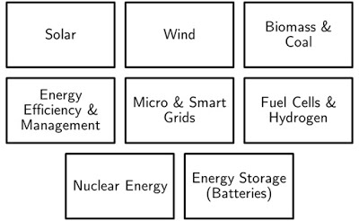
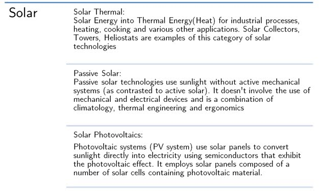
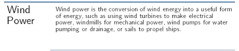
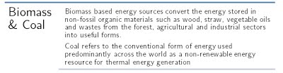
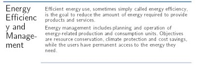
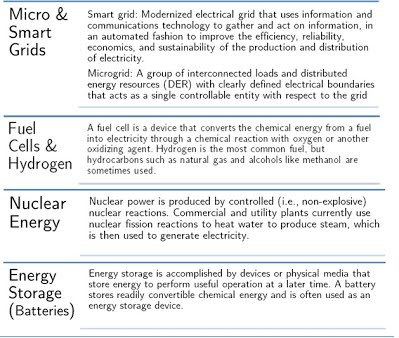

Energy Science and Engineering
Link to the Energy Department Website
Introduction and Scope
The Department of Energy Science and Engineering (DESE) has a vision to develop sustainable energy systems and solutions for future energy needs of the world in general and India in particular. Established as the interdisciplinary Energy Systems Engineering programme in 1981, it was upgraded to a full-fledged department in 2007. It is one of the very few departments in India to cater to the challenges specific to the energy sector.
Started in 2008, the new Dual Degree program (BTech in Energy Science and Engineering and MTech in Energy Systems Engineering) was structured to equip the undergraduate students with tools and techniques required to analyse various energy systems, improve the conventional energy systems and design the energy systems of future (both conventional and renewable).
While pursuing the two degrees, the student has the opportunity to analyse and design novel energy systems, develop innovative methods and procedures for application to energy systems, pursue fundamental research in the energy sector, and work on energy economics and project management.
Engineering students with such inter-disciplinary skills are in demand in energy supply companies, energy technology manufacturing industries, energy consultancy companies and process industries.
Course contents
The main objective of the Dual Degree programme is to provide specialist engineers to meet the challenges of the energy sector with cross cutting analytical skills.
The course curriculum consists of four main types of courses. They have been explained in brief below. For further details, please refer to the detailed course curriculum.
- Core Energy Courses
Courses designed for the energy sector providing the required background for analysing and designing energy systems. Some of these courses are compulsory (Energy Engineering Fundamentals, Introduction to Renewable Energy Technologies), while others are electives, to be chosen by the student based on his/her liking (Wind Energy Conversion Systems, Utilization of Solar Thermal Energy, among others) - Core Mechanical Courses
Courses designed to provide the basics of Mechanical Engineering required for Energy Engineers. Again divided between compulsory and electives. Advanced courses can be taken as electives. - Electrical Courses
Courses designed to provide the basics of Electrical Engineering required for Energy Engineers. Advanced courses can be taken as electives. - Management and Financing in the field of Energy
Courses that bridge the technical and financial/management aspects of an Energy System. - Others:
Chemical Engineering (e.g. Transport Process), Material Sciences (Material Science for Energy Applications)
- Compulsory Courses
Please browse through syllabus for detailed information. - Electives
Electives provide an opportunity for all students to explore and acquire skills in their interest. Student gets to select any course (from the list of available courses) of his/her choice.Student has to take 13 electives. They are further divided as Department elective (9 courses), Institute Electives (2 courses) and Open Elective (2 courses). - Projects
Projects are essential for enhancing the understanding of the subject. There are a handful of projects a student gets to do besides his/her DDP (Fifth year Dual-Degree Project). The emphasis on learning via projects can be considered a distinguishing feature of the Energy DD program. Apart from dedicated project related courses (Energy Innovation Lab, Energy Design Project); there are a few theory courses with a small project component (Department Introductory Course-DIC).
Broad Areas of Focus (Research)
There are 8 broad areas of focus in terms of research opportunities in the department. The basic description of these topics is given below in the chart.
     Opportunities
Students have bagged jobs in areas like power sector, investment banking, management consulting, energy policies, oil science, analytics etc. in renowned organisations. Opportunities like summer projects, semester long research projects, national and international competitions, internship opportunities are also prevalent among the undergraduate students.
Being in a diverse field like energy where you get to learn the basics from various departments like mechanical, chemical, electrical, etc. improves your chances of future research and study. Students from our department have secured offers for further studies in the renowned universities like Oxford, Caltech etc.
The renewable energy and power sector is the upcoming buzz sector in India and therefore there exists a lot of start-up opportunities in this field. There is a tremendous scope for starting up a technical company and students are encouraged to do so. Students enjoy freedom to pursue their passion and get full support from the faculty members. Conclusively, Energy Science and Engineering is a branch of aspirations, challenges, opportunities and ideas.
Final Word
An article in the Times of India: “Engineers of tomorrow will learn architecture, anthropology, and sociology”, dated May 20, 2013, states:
“Twentieth century industries were built on a foundation of engineering. Engineers then were builders in the tradition of Thomas Edison, specialists who stuck to their core disciplines for life. Twenty first century engineers belong to a different league. They are no longer mechanical, electrical, chemical or computer engineers. They practise a subject that is fuzzy as well as precise, deep as well as broad, general as well as specialised. They are building a set of industries that are sophisticated, efficient and environment-friendly. And a world that is healthy, sustainable and beautiful”
We believe that this is the spirit with which the Energy Sciences and Engineering Department should be embraced. The Dual Degree Program in Energy Engineering is built on the premise of equipping students with a varied skill set to enable them to solve twenty-first century problems in the field of energy. The future is energy.
Frequently Asked Questions
Why is Energy Engineering offered only as a Dual Degree Program?
Energy Engineering is a non-conventional engineering field. The focus here is on developing interdisciplinary skills, and applying them to real world problems. Since there is a mix of core Energy concepts (renewables, efficiency, policy) with Mechanical, Electrical, Civil and Chemical Engineering concepts, having a single project at the end (Fifth year Dual Degree Project) is believed to help the student use the learning from all these varied set of courses to tackle a problem in the energy domain.
What is the need for the prominent focus on project work in this program?
Energy department provides you with a unique opportunity of in-semester projects i.e. projects during the semester. You get to have hands-on experience of technical aspects of various topics and of what is being taught theoretically. Energy students enjoy the freedom to choose the area/ topic in which they would like to pursue the project and also the full support from the faculty members. Projects thus provide an opportunity for students to make an impact.
References:
- http://www.ese.iitb.ac.in/ESE_old/aboutus/Energy_Science_Engineering.pdf
- http://www.ese.iitb.ac.in/ESE_old/aboutus/overview_DESE.pdf
- Syllabus Brochure